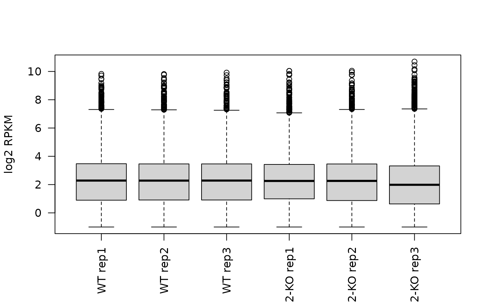
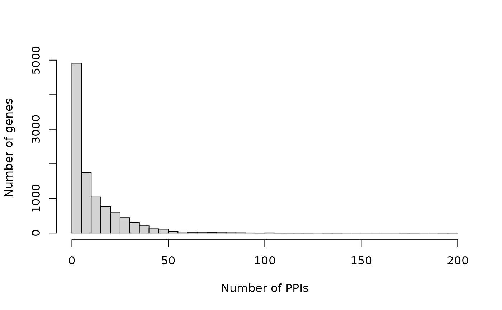

library(BioPlex)
library(AnnotationDbi)
library(AnnotationHub)
library(ExpressionAtlas)
library(graph)Connect to AnnotationHub:
ah <- AnnotationHub::AnnotationHub()Connect to ExperimentHub:
eh <- ExperimentHub::ExperimentHub()OrgDb package for human:
ahdb <- AnnotationHub::query(ah, c("orgDb", "Homo sapiens"))
orgdb <- ahdb[[length(ahdb)]]
orgdb
#> OrgDb object:
#> | DBSCHEMAVERSION: 2.1
#> | Db type: OrgDb
#> | Supporting package: AnnotationDbi
#> | DBSCHEMA: HUMAN_DB
#> | ORGANISM: Homo sapiens
#> | SPECIES: Human
#> | EGSOURCEDATE: 2021-Apr14
#> | EGSOURCENAME: Entrez Gene
#> | EGSOURCEURL: ftp://ftp.ncbi.nlm.nih.gov/gene/DATA
#> | CENTRALID: EG
#> | TAXID: 9606
#> | GOSOURCENAME: Gene Ontology
#> | GOSOURCEURL: http://current.geneontology.org/ontology/go-basic.obo
#> | GOSOURCEDATE: 2021-02-01
#> | GOEGSOURCEDATE: 2021-Apr14
#> | GOEGSOURCENAME: Entrez Gene
#> | GOEGSOURCEURL: ftp://ftp.ncbi.nlm.nih.gov/gene/DATA
#> | KEGGSOURCENAME: KEGG GENOME
#> | KEGGSOURCEURL: ftp://ftp.genome.jp/pub/kegg/genomes
#> | KEGGSOURCEDATE: 2011-Mar15
#> | GPSOURCENAME: UCSC Genome Bioinformatics (Homo sapiens)
#> | GPSOURCEURL:
#> | GPSOURCEDATE: 2021-Feb16
#> | ENSOURCEDATE: 2021-Feb16
#> | ENSOURCENAME: Ensembl
#> | ENSOURCEURL: ftp://ftp.ensembl.org/pub/current_fasta
#> | UPSOURCENAME: Uniprot
#> | UPSOURCEURL: http://www.UniProt.org/
#> | UPSOURCEDATE: Mon Apr 26 21:53:12 2021
keytypes(orgdb)
#> [1] "ACCNUM" "ALIAS" "ENSEMBL" "ENSEMBLPROT" "ENSEMBLTRANS"
#> [6] "ENTREZID" "ENZYME" "EVIDENCE" "EVIDENCEALL" "GENENAME"
#> [11] "GENETYPE" "GO" "GOALL" "IPI" "MAP"
#> [16] "OMIM" "ONTOLOGY" "ONTOLOGYALL" "PATH" "PFAM"
#> [21] "PMID" "PROSITE" "REFSEQ" "SYMBOL" "UCSCKG"
#> [26] "UNIPROT"Get core set of complexes:
core <- getCorum(set = "core", organism = "Human")
#> Using cached version from 2021-07-13 05:24:19Turn the CORUM complexes into a list of graph instances, where all nodes of a complex are connected to all other nodes of that complex with undirected edges.
core.glist <- corum2graphlist(core, subunit.id.type = "UNIPROT")Identify complexes that have a subunit of interest:
has.cdk2 <- hasSubunit(core.glist,
subunit = "CDK2",
id.type = "SYMBOL")Check the answer:
table(has.cdk2)
#> has.cdk2
#> FALSE TRUE
#> 2408 9
cdk2.glist <- core.glist[has.cdk2]
lapply(cdk2.glist, function(g) unlist(graph::nodeData(g, attr = "SYMBOL")))
#> $CORUM311_Cell_cycle_kinase_complex_CDK2
#> P12004 P24385 P24941 P38936
#> "PCNA" "CCND1" "CDK2" "CDKN1A"
#>
#> $`CORUM1003_RC_complex_(Replication_competent_complex)`
#> P09884 P20248 P24941 P35249 P35250 P35251 P40937 P40938 Q14181
#> "POLA1" "CCNA2" "CDK2" "RFC4" "RFC2" "RFC1" "RFC5" "RFC3" "POLA2"
#>
#> $`CORUM1004_RC_complex_during_S-phase_of_cell_cycle`
#> P09874 P09884 P11387 P15927 P18858 P20248 P24941 P27694 P28340 P35244
#> "PARP1" "POLA1" "TOP1" "RPA2" "LIG1" "CCNA2" "CDK2" "RPA1" "POLD1" "RPA3"
#> P35250 P35251 Q07864
#> "RFC2" "RFC1" "POLE"
#>
#> $`CORUM1656_p27-cyclinE-CDK2_complex`
#> P24864 P24941 P46527
#> "CCNE1" "CDK2" "CDKN1B"
#>
#> $`CORUM3015_p27-cyclinE-Cdk2_-_Ubiquitin_E3_ligase_(SKP1A,_SKP2,_CUL1,_CKS1B,_RBX1)_complex`
#> P24864 P24941 P46527 P61024 P62877 P63208 Q13309 Q13616
#> "CCNE1" "CDK2" "CDKN1B" "CKS1B" "RBX1" "SKP1" "SKP2" "CUL1"
#>
#> $`CORUM5556_CDK2-CCNA2_complex`
#> P20248 P24941
#> "CCNA2" "CDK2"
#>
#> $`CORUM5559_CDC2-CCNA2-CDK2_complex`
#> P06493 P20248 P24941
#> "CDK1" "CCNA2" "CDK2"
#>
#> $`CORUM5560_CDK2-CCNE1_complex`
#> P24864 P24941
#> "CCNE1" "CDK2"
#>
#> $`CORUM6589_E2F-1-DP-1-cyclinA-CDK2_complex`
#> P24941 P78396 Q01094 Q14186
#> "CDK2" "CCNA1" "E2F1" "TFDP1"We can then also inspect the graph with plotting utilities from the Rgraphviz package:
plot(cdk2.glist[[1]], main = cdk2.glist[[1]]@graphData$ComplexName)Get the latest version of the 293T PPI network:
bp.293t <- getBioPlex(cell.line = "293T", version = "3.0")
#> Using cached version from 2021-07-13 05:24:24Turn the BioPlex PPI network into one big graph where bait and prey relationship are represented by directed edges from bait to prey.
bp.gr <- bioplex2graph(bp.293t)Now we can also easily pull out a BioPlex subnetwork for a CORUM complex of interest:
Add PFAM domain annotations to the node metadata:
bp.gr <- BioPlex::annotatePFAM(bp.gr, orgdb)Create a map from PFAM to UNIPROT:
unip2pfam <- graph::nodeData(bp.gr, graph::nodes(bp.gr), "PFAM")
pfam2unip <- stack(unip2pfam)
pfam2unip <- split(as.character(pfam2unip$ind), pfam2unip$values)
head(pfam2unip, 2)
#> $PF00001
#> [1] "P28566" "P25106" "P23945" "Q9HBX9" "P16473" "P04201" "Q9HC97" "P30968"
#> [9] "Q9Y2T6" "Q14330" "P46089" "Q15391" "Q9BXA5" "Q13304" "P61073" "P21462"
#> [17] "P25090" "Q99679" "P21730" "P30556" "P43088" "P32246" "P32249" "Q9Y2T5"
#> [25] "Q7Z602" "P43657" "O00398" "Q9H244" "Q86VZ1" "Q9NPB9" "Q99788" "P51684"
#> [33] "P35414" "O00590" "Q9H1Y3" "P55085" "O15218" "Q9GZQ4" "P25101" "Q9NS66"
#> [41] "Q9NQS5" "P21453" "P14416" "P24530" "P32239" "Q16581" "O00421" "Q9UHM6"
#> [49] "Q8N6U8" "P20309" "O15354" "Q9BXC0" "P47775" "P30550" "P49146" "P47900"
#> [57] "Q8TDU9" "P25103" "P35372" "P41597" "Q9P296" "P28335" "O95136" "P08173"
#> [65] "P29371" "P41146" "P43119" "O95977" "Q9HBW0" "Q99677" "Q9BXB1" "Q8WXD0"
#> [73] "O43193" "P30989" "Q8NGU9" "P47901" "P22888" "Q9GZN0" "P21917" "O60755"
#> [81] "Q8TDV0" "O43614" "Q9NS67" "P08912" "Q9UPC5" "Q8TDV2" "Q92633" "Q9NQ55"
#> [89] "Q13585" "Q9UBY5" "Q9H228" "P28222"
#>
#> $PF00002
#> [1] "Q8IZP9" "P41587" "Q8IZF4" "P49190" "P32241" "P47871" "P48960" "Q8IZF5"
#> [9] "O14514" "Q03431" "Q9NYQ6" "Q9HCU4" "Q8WXG9" "Q9NYQ7" "O60242" "O60241"
#> [17] "Q9HAR2" "O94910" "Q8IWK6" "O95490" "Q96PE1" "Q86SQ4"Let’s focus on PF02023, corresponding to the zinc finger-associated SCAN domain. For each protein containing the SCAN domain, we now extract PFAM domains connected to the SCAN domain by an edge in the BioPlex network.
scan.unip <- pfam2unip[["PF02023"]]
getIAPfams <- function(n) graph::nodeData(bp.gr, graph::edges(bp.gr)[[n]], "PFAM")
unip2iapfams <- lapply(scan.unip, getIAPfams)
unip2iapfams <- lapply(unip2iapfams, unlist)
names(unip2iapfams) <- scan.unipLooking at the top 5 PFAM domains most frequently connected to the SCAN domain by an edge in the BioPlex network …
pfam2iapfams <- unlist(unip2iapfams)
sort(table(pfam2iapfams), decreasing = TRUE)[1:5]
#> pfam2iapfams
#> PF02023 PF00096 PF01352 PF06467 PF00249
#> 208 169 99 14 8… we find PF02023, the SCAN domain itself, and PF00096, a C2H2 type zinc finger domain. This finding is consistent with results reported in the BioPlex 3.0 publication.
See also the PFAM domain-domain association analysis vignette for a more comprehensive analysis of PFAM domain associations in the BioPlex network.
Get RNA-seq data for HEK293 cells from GEO: GSE122425
se <- getGSE122425()
#> Using cached version from 2021-07-13 05:24:36
se
#> class: SummarizedExperiment
#> dim: 57905 6
#> metadata(0):
#> assays(2): raw rpkm
#> rownames(57905): ENSG00000223972 ENSG00000227232 ... ENSG00000231514
#> ENSG00000235857
#> rowData names(4): SYMBOL KO GO length
#> colnames(6): GSM3466389 GSM3466390 ... GSM3466393 GSM3466394
#> colData names(41): title geo_accession ... passages.ch1 strain.ch1Inspect expression of prey genes:
bait <- unique(bp.293t$SymbolA)
length(bait)
#> [1] 8995
prey <- unique(bp.293t$SymbolB)
length(prey)
#> [1] 10419
ind <- match(prey, rowData(se)$SYMBOL)
par(las = 2)
boxplot(log2(assay(se, "rpkm") + 0.5)[ind,],
names = se$title,
ylab = "log2 RPKM")
How many prey genes are expressed (raw read count > 0) in all 3 WT reps:
# background: how many genes in total are expressed in all three WT reps
gr0 <- rowSums(assay(se)[,1:3] > 0)
table(gr0 == 3)
#>
#> FALSE TRUE
#> 33842 24063
# prey: expressed in all three WT reps
table(gr0[ind] == 3)
#>
#> FALSE TRUE
#> 599 9346
# prey: expressed in at least one WT rep
table(gr0[ind] > 0)
#>
#> FALSE TRUE
#> 305 9640Are prey genes overrepresented in the expressed genes?
exprTable <-
matrix(c(9346, 1076, 14717, 32766),
nrow = 2,
dimnames = list(c("Expressed", "Not.expressed"),
c("In.prey.set", "Not.in.prey.set")))
exprTable
#> In.prey.set Not.in.prey.set
#> Expressed 9346 14717
#> Not.expressed 1076 32766Test using hypergeometric test (i.e. one-sided Fisher’s exact test):
fisher.test(exprTable, alternative = "greater")
#>
#> Fisher's Exact Test for Count Data
#>
#> data: exprTable
#> p-value < 2.2e-16
#> alternative hypothesis: true odds ratio is greater than 1
#> 95 percent confidence interval:
#> 18.29105 Inf
#> sample estimates:
#> odds ratio
#> 19.34726Alternatively: permutation test, i.e. repeatedly sample number of prey genes from the background, and assess how often we have as many or more than 9346 genes expressed:
Check which genes turn up most frequently as prey:
prey.freq <- sort(table(bp.293t$SymbolB), decreasing = TRUE)
preys <- names(prey.freq)
prey.freq <- as.vector(prey.freq)
names(prey.freq) <- preys
head(prey.freq)
#> HSPA5 HSPA8 TUBB8 UBB YBX1 YWHAH
#> 199 192 176 173 139 132
summary(prey.freq)
#> Min. 1st Qu. Median Mean 3rd Qu. Max.
#> 1.00 2.00 6.00 11.34 16.00 199.00
hist(prey.freq, breaks = 50, main = "", xlab = "Number of PPIs", ylab = "Number of genes")
Prey genes are involved 11 PPIs on average.
There doesn’t seem to be a strong correlation between expression level and the frequency of gene to turn up as prey:
ind <- match(names(prey.freq), rowData(se)$SYMBOL)
rmeans <- rowMeans(assay(se, "rpkm")[ind, 1:3])
log.rmeans <- log2(rmeans + 0.5)
par(pch = 20)
plot( x = prey.freq,
y = log.rmeans,
xlab = "prey frequency",
ylab = "log2 RPKM")
cor(prey.freq,
log.rmeans,
use = "pairwise.complete.obs")
#> [1] 0.2035977See also the BioNet maximum scoring subnetwork analysis vignette for a more comprehensive analysis of the 293T transcriptome data from GSE122425 when mapped onto BioPlex PPI network.
Get the latest version of the HCT116 PPI network:
bp.hct116 <- getBioPlex(cell.line = "HCT116", version = "1.0")
#> Using cached version from 2021-07-13 05:24:40
head(bp.hct116)
#> GeneA GeneB UniprotA UniprotB SymbolA SymbolB pW pNI
#> 1 88455 50649 Q8IZ07 Q9NR80-4 ANKRD13A ARHGEF4 3.959215e-04 3.298003e-05
#> 2 88455 115106 Q8IZ07 Q96CS2 ANKRD13A HAUS1 4.488473e-02 1.934731e-03
#> 3 88455 23086 Q8IZ07 Q8NEV8-2 ANKRD13A EXPH5 7.402394e-05 9.296226e-04
#> 4 88455 54930 Q8IZ07 Q9H6D7 ANKRD13A HAUS4 9.180959e-07 1.278318e-04
#> 5 88455 79441 Q8IZ07 Q68CZ6 ANKRD13A HAUS3 8.709394e-07 1.495480e-03
#> 6 88455 93323 Q8IZ07 Q9BT25-2 ANKRD13A HAUS8 9.147659e-06 2.061483e-03
#> pInt
#> 1 0.9995711
#> 2 0.9531805
#> 3 0.9989964
#> 4 0.9998713
#> 5 0.9985036
#> 6 0.9979294Get RNA-seq data for 934 cancer cell lines (incl. HCT116) from the Cancer Cell Line Encyclopedia as available from the ArrayExpress-ExpressionAtlas (Accession: E-MTAB-2770)
atlasRes <- ExpressionAtlas::searchAtlasExperiments(
properties = "Cancer Cell Line Encyclopedia",
species = "human" )
#> Searching for Expression Atlas experiments matching your query ...
#> Query successful.
#> Found 1 experiments matching your query.
atlasRes
#> DataFrame with 1 row and 4 columns
#> Accession Species Type Title
#> <character> <character> <character> <character>
#> 1 E-MTAB-2770 Homo sapiens RNA-seq of coding RNA RNA-seq of 934 human..
ccle <- ExpressionAtlas::getAtlasData(atlasRes$Accession)
#> Downloading Expression Atlas experiment summary from:
#> ftp://ftp.ebi.ac.uk/pub/databases/microarray/data/atlas/experiments/E-MTAB-2770/E-MTAB-2770-atlasExperimentSummary.Rdata
#> Successfully downloaded experiment summary object for E-MTAB-2770
ccle <- ccle$`E-MTAB-2770`$rnaseq
ccle
#> class: RangedSummarizedExperiment
#> dim: 65217 934
#> metadata(4): pipeline filtering mapping quantification
#> assays(1): counts
#> rownames(65217): ENSG00000000003 ENSG00000000005 ... ENSG00000281921
#> ENSG00000281922
#> rowData names(0):
#> colnames(934): run_22Rv1.2 run_23132_87.2 ... run_ZR_75_1.1
#> run_ZR_75_30.1
#> colData names(4): AtlasAssayGroup organism cell_line diseaseGet RNA-seq data of 675 commonly used human cancer cell lines (incl. HCT116) from Klijn et al., 2015 as available from the ArrayExpress-ExpressionAtlas (Accession: E-MTAB-2706)
klijn <- ExpressionAtlas::getAtlasData("E-MTAB-2706")
#> Downloading Expression Atlas experiment summary from:
#> ftp://ftp.ebi.ac.uk/pub/databases/microarray/data/atlas/experiments/E-MTAB-2706/E-MTAB-2706-atlasExperimentSummary.Rdata
#> Successfully downloaded experiment summary object for E-MTAB-2706
klijn <- klijn$`E-MTAB-2706`$rnaseq
klijn
#> class: RangedSummarizedExperiment
#> dim: 65217 622
#> metadata(4): pipeline filtering mapping quantification
#> assays(1): counts
#> rownames(65217): ENSG00000000003 ENSG00000000005 ... ENSG00000281921
#> ENSG00000281922
#> rowData names(0):
#> colnames(622): ERR413347 ERR413348 ... ERR414020 ERR415514
#> colData names(12): AtlasAssayGroup organism ... media freeze_mediaSanity check that the expressed genes are showing up as prey:
bait <- unique(bp.hct116$GeneA)
length(bait)
#> [1] 4866
prey <- unique(bp.hct116$GeneB)
length(prey)
#> [1] 7903Map prey to ENSEMBL gene IDs:
prey <- AnnotationDbi::mapIds(orgdb,
keytype = "ENTREZID",
column = "ENSEMBL",
keys = as.character(prey))
#> 'select()' returned 1:many mapping between keys and columns
prey <- unlist(unname(prey))
ind.prey <- match(prey, rownames(ccle))Combine HCT-116 transcriptome from CCLE and Klijn et al. datasets:
ind1 <- grep("HCT 116", ccle$cell_line)
ind2 <- grep("HCT 116", klijn$cell_line)
emat <- cbind(assay(ccle)[,ind1], assay(klijn)[,ind2])
colnames(emat) <- c("ccle", "klijn")
head(emat)
#> ccle klijn
#> ENSG00000000003 2471 1876
#> ENSG00000000005 0 0
#> ENSG00000000419 4082 3731
#> ENSG00000000457 1160 676
#> ENSG00000000460 1785 1206
#> ENSG00000000938 0 0The CCLE and Klijn et al. measurements correlate very well:
cor(emat[,"ccle"], emat[,"klijn"])
#> [1] 0.9246789How many prey genes are expressed (raw read count > 0) in both CCLE and Klijn et al.?
# background: how many genes in total are expressed in both measurements
gr0 <- rowSums(emat > 0)
table(gr0 == 2)
#>
#> FALSE TRUE
#> 38752 26465
# prey: expressed in both measurements
table(gr0[ind.prey] == 2)
#>
#> FALSE TRUE
#> 310 7553
# prey: expressed in at least one measurement
table(gr0[ind.prey] > 0)
#>
#> FALSE TRUE
#> 178 7685Get the CCLE transcriptome data for HCT116:
ind <- grep("^HCT 116$", ccle$cell_line)
ccle.trans <- ccle[,ind]
ccle.trans
#> class: RangedSummarizedExperiment
#> dim: 65217 1
#> metadata(4): pipeline filtering mapping quantification
#> assays(1): counts
#> rownames(65217): ENSG00000000003 ENSG00000000005 ... ENSG00000281921
#> ENSG00000281922
#> rowData names(0):
#> colnames(1): run_HCT_116.2
#> colData names(4): AtlasAssayGroup organism cell_line diseaseWe would typically convert the raw counts to FPKMs or TPMs to account for gene length, but here we just do a simple log-transformation of the counts divided by library size.
Get the CCLE proteome data for HCT116:
ehdb <- AnnotationHub::query(eh, c("gygi", "depmap"))
ccle.prot <- ehdb[[length(ehdb)]]
#> snapshotDate(): 2021-05-18
#> see ?depmap and browseVignettes('depmap') for documentation
#> loading from cache
ccle.prot <- as.data.frame(ccle.prot)
ccle.prot <- ccleProteome2SummarizedExperiment(ccle.prot, cell.line = "HCT116")
ccle.prot
#> class: SummarizedExperiment
#> dim: 12755 1
#> metadata(0):
#> assays(1): expr
#> rownames(12755): P55011 P35453 ... Q99735 Q9P003
#> rowData names(2): SYMBOL ENTREZID
#> colnames(1): HCT116
#> colData names(0):Map to ENSEMBL for comparison with CCLE transcriptome data for HCT116:
rnames <- AnnotationDbi::mapIds(orgdb,
keytype = "UNIPROT",
column = "ENSEMBL",
keys = rownames(ccle.prot))Subset to the ENSEMBL IDs that both datasets have in common:
A look at general correlation between HCT116 transcript and protein expression:
cor.test(assay(ccle.trans, "logcounts")[isect,],
assay(ccle.prot)[ind,],
use = "complete.obs")
#>
#> Pearson's product-moment correlation
#>
#> data: assay(ccle.trans, "logcounts")[isect, ] and assay(ccle.prot)[ind, ]
#> t = 31.872, df = 7848, p-value < 2.2e-16
#> alternative hypothesis: true correlation is not equal to 0
#> 95 percent confidence interval:
#> 0.3187947 0.3579705
#> sample estimates:
#> cor
#> 0.3385293See also the Transcriptome-Proteome analysis vignette for further exploration of the correlation between HCT116 transcript and protein expression.
Get the relative protein expression data comparing 293T and HCT116 cells from Supplementary Table S4A of the BioPlex 3 paper:
bp.prot <- getBioplexProteome()
#> Using cached version from 2021-07-13 05:26:01
bp.prot
#> class: SummarizedExperiment
#> dim: 9604 10
#> metadata(0):
#> assays(1): exprs
#> rownames(9604): P0CG40 Q8IXZ3-4 ... Q9H3S5 Q8WYQ3
#> rowData names(5): ENTREZID SYMBOL nr.peptides log2ratio adj.pvalue
#> colnames(10): HCT1 HCT2 ... HEK4 HEK5
#> colData names(1): cell.line
rowData(bp.prot)
#> DataFrame with 9604 rows and 5 columns
#> ENTREZID SYMBOL nr.peptides log2ratio adj.pvalue
#> <character> <character> <integer> <numeric> <numeric>
#> P0CG40 100131390 SP9 1 -2.819071 6.66209e-08
#> Q8IXZ3-4 221833 SP8 3 -3.419888 6.94973e-07
#> P55011 6558 SLC12A2 4 0.612380 4.85602e-06
#> O60341 23028 KDM1A 7 -0.319695 5.08667e-04
#> O14654 8471 IRS4 4 -5.951096 1.45902e-06
#> ... ... ... ... ... ...
#> Q9H6X4 80194 TMEM134 2 -0.379342 7.67195e-05
#> Q9BS91 55032 SLC35A5 1 -2.237634 8.75523e-05
#> Q9UKJ5 26511 CHIC2 1 -0.614932 1.78756e-03
#> Q9H3S5 93183 PIGM 1 -1.011397 8.91589e-06
#> Q8WYQ3 400916 CHCHD10 1 0.743852 1.17163e-03A couple of quick sanity checks:
rowSums(assay(bp.prot)[1:5,])
#> P0CG40 Q8IXZ3-4 P55011 O60341 O14654
#> 99.99994 99.99991 99.99996 100.00011 100.00006rowData column log2ratio corresponds to the mean of the five HEK samples, divided by the mean of the five HCT samples (and then taking log2 of it):
ratio <- rowMeans(assay(bp.prot)[1:5, 1:5]) / rowMeans(assay(bp.prot)[1:5, 6:10])
log2(ratio)
#> P0CG40 Q8IXZ3-4 P55011 O60341 O14654
#> -2.8190710 -3.4198879 0.6123799 -0.3196953 -5.9510960rowData column adj.pvalue stores Benjamini-Hochberg adjusted p-values from a t-test between the five HEK samples and the five HCT samples:
t.test(assay(bp.prot)[1, 1:5], assay(bp.prot)[1, 6:10])
#>
#> Welch Two Sample t-test
#>
#> data: assay(bp.prot)[1, 1:5] and assay(bp.prot)[1, 6:10]
#> t = -27.898, df = 7.5779, p-value = 6.482e-09
#> alternative hypothesis: true difference in means is not equal to 0
#> 95 percent confidence interval:
#> -16.29035 -13.78047
#> sample estimates:
#> mean of x mean of y
#> 2.482288 17.517700The Transcriptome-Proteome analysis vignette also explores the agreement between differential gene expression and differential protein expression when comparing HEK293 against HCT116 cells.
sessionInfo()
#> R version 4.1.0 (2021-05-18)
#> Platform: x86_64-pc-linux-gnu (64-bit)
#> Running under: Ubuntu 20.04.2 LTS
#>
#> Matrix products: default
#> BLAS/LAPACK: /usr/lib/x86_64-linux-gnu/openblas-pthread/libopenblasp-r0.3.8.so
#>
#> locale:
#> [1] LC_CTYPE=en_US.UTF-8 LC_NUMERIC=C
#> [3] LC_TIME=en_US.UTF-8 LC_COLLATE=en_US.UTF-8
#> [5] LC_MONETARY=en_US.UTF-8 LC_MESSAGES=C
#> [7] LC_PAPER=en_US.UTF-8 LC_NAME=C
#> [9] LC_ADDRESS=C LC_TELEPHONE=C
#> [11] LC_MEASUREMENT=en_US.UTF-8 LC_IDENTIFICATION=C
#>
#> attached base packages:
#> [1] parallel stats4 stats graphics grDevices utils datasets
#> [8] methods base
#>
#> other attached packages:
#> [1] depmap_1.6.0 dplyr_1.0.7
#> [3] graph_1.70.0 ExpressionAtlas_1.20.0
#> [5] xml2_1.3.2 limma_3.48.1
#> [7] AnnotationHub_3.0.1 BiocFileCache_2.0.0
#> [9] dbplyr_2.1.1 AnnotationDbi_1.54.1
#> [11] BioPlex_0.99.2 SummarizedExperiment_1.22.0
#> [13] Biobase_2.52.0 GenomicRanges_1.44.0
#> [15] GenomeInfoDb_1.28.1 IRanges_2.26.0
#> [17] S4Vectors_0.30.0 BiocGenerics_0.38.0
#> [19] MatrixGenerics_1.4.0 matrixStats_0.59.0
#> [21] BiocStyle_2.20.2
#>
#> loaded via a namespace (and not attached):
#> [1] bitops_1.0-7 fs_1.5.0
#> [3] bit64_4.0.5 filelock_1.0.2
#> [5] httr_1.4.2 rprojroot_2.0.2
#> [7] tools_4.1.0 bslib_0.2.5.1
#> [9] utf8_1.2.1 R6_2.5.0
#> [11] DBI_1.1.1 withr_2.4.2
#> [13] tidyselect_1.1.1 bit_4.0.4
#> [15] curl_4.3.2 compiler_4.1.0
#> [17] textshaping_0.3.5 desc_1.3.0
#> [19] DelayedArray_0.18.0 bookdown_0.22
#> [21] sass_0.4.0 rappdirs_0.3.3
#> [23] pkgdown_1.6.1 systemfonts_1.0.2
#> [25] stringr_1.4.0 digest_0.6.27
#> [27] rmarkdown_2.9 XVector_0.32.0
#> [29] pkgconfig_2.0.3 htmltools_0.5.1.1
#> [31] highr_0.9 fastmap_1.1.0
#> [33] rlang_0.4.11 RSQLite_2.2.7
#> [35] shiny_1.6.0 jquerylib_0.1.4
#> [37] generics_0.1.0 jsonlite_1.7.2
#> [39] RCurl_1.98-1.3 magrittr_2.0.1
#> [41] GenomeInfoDbData_1.2.6 Matrix_1.3-3
#> [43] Rcpp_1.0.7 fansi_0.5.0
#> [45] lifecycle_1.0.0 stringi_1.6.2
#> [47] yaml_2.2.1 zlibbioc_1.38.0
#> [49] grid_4.1.0 blob_1.2.1
#> [51] promises_1.2.0.1 ExperimentHub_2.0.0
#> [53] crayon_1.4.1 lattice_0.20-44
#> [55] Biostrings_2.60.1 KEGGREST_1.32.0
#> [57] knitr_1.33 pillar_1.6.1
#> [59] XML_3.99-0.6 glue_1.4.2
#> [61] BiocVersion_3.13.1 evaluate_0.14
#> [63] BiocManager_1.30.16 png_0.1-7
#> [65] vctrs_0.3.8 httpuv_1.6.1
#> [67] purrr_0.3.4 assertthat_0.2.1
#> [69] cachem_1.0.5 xfun_0.24
#> [71] mime_0.11 xtable_1.8-4
#> [73] later_1.2.0 ragg_1.1.3
#> [75] tibble_3.1.2 memoise_2.0.0
#> [77] ellipsis_0.3.2 interactiveDisplayBase_1.30.0